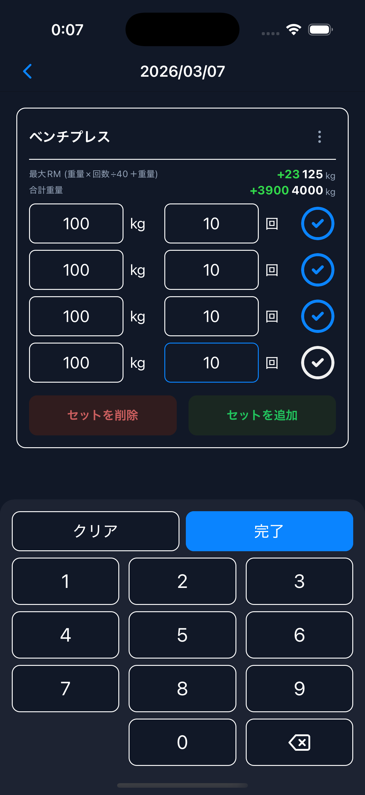
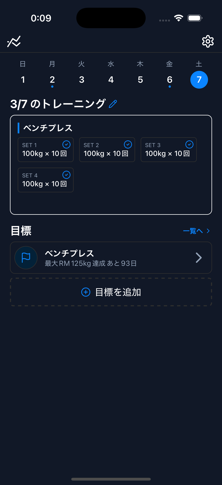

01
トレーニング記録
筋力トレーニングの内容を、重量・回数・メモとして記録できます。
TRAIN SMARTER, STAY CONSISTENT
トレサポは、筋力トレーニングに関する情報をシンプルに記録・管理するためのアプリです。重量・回数・メモを日々積み上げて、いつでも振り返れます。
記録
重量・回数・メモ
管理
トレ情報を整理
見返し
過去記録を確認
App Preview

主な用途
記録と管理
記録内容
重量・回数・メモ
Core Features

01
筋力トレーニングの内容を、重量・回数・メモとして記録できます。
02
日々のトレーニング情報をアプリ内で整理して管理できます。
03
残した記録を見返しながら、トレーニング内容の振り返りに活用できます。
For Daily Athletes
「何をどれだけやったか」を正確に残しておくことが、継続的なトレーニングの土台になります。トレサポは、その記録と管理をシンプルに支えます。